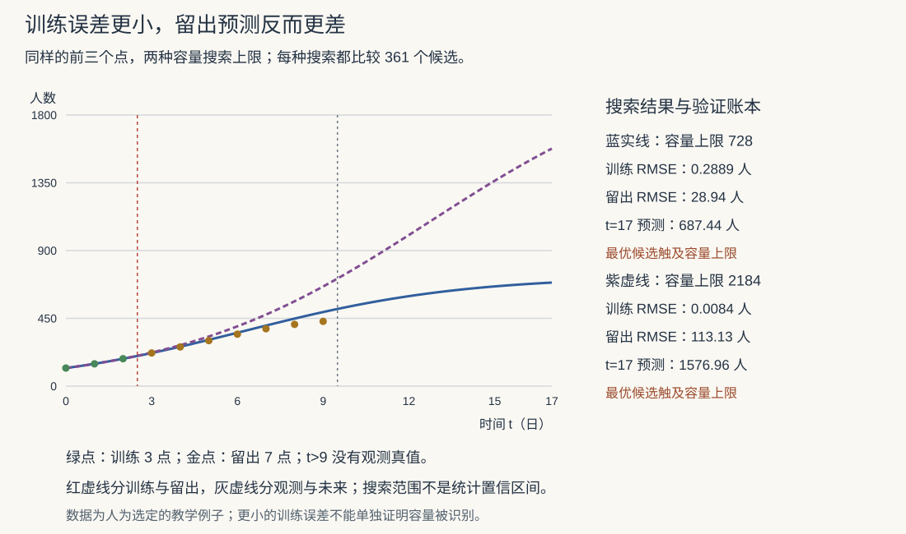

建模 I · 方法论与量纲分析
数学建模没有新定理，它是一门决策学科：把混沌的现实问题翻译成"可用全站工具处理"的数学问题，再把数学答案翻译回现实并为其负责。本页立方法论骨架（建模循环、假设的艺术、模型分类学）与最古老的免费午餐——量纲分析：不解方程就能锁定答案形状的魔法。

1. 建模循环（六步，永不单向）
每步的手艺与常见死法：
- 问题界定：把"怎么减少拥堵"钉成"某时段某路口平均延误最小化"——没钉死目标量的建模全是空转；
- 假设：建模的灵魂。每条假设 = 一次"忽略某因素"的定价交易；纪律是显式列出并标注可疑度（后面验证时按可疑度逐条放松——"假设清单"就是模型的更新路线图）；
- 建模：选语言（下页的模型谱系）——变化率的语言是 ODE、随机到达是 Poisson、配额分配是 LP、多因素打分是回归……"识别问题的数学型"是建模的核心技能，与数值 III 识别方程类型、概率 II 识别分布同一种直觉；
- 求解：解析（全站前 16 门课）或数值（数值分析线）——能解析先解析（结构洞察），需规模上数值；
- 验证（本站 verify 文化的建模版）：量纲对不对（§2）、极端情形合不合理（参数推到 0/∞ 看退化）、与已知数据/常识对账、灵敏度分析（参数扰动 5%，结论翻不翻？翻则模型脆弱——统计 IV"显著 vs 稳健"的建模版）；
- 解释：把 \(\lambda^* = 4.7\) 翻译回"每小时最多接 4.7 单"，附适用范围与失效条件——模型的边界是交付物的一部分。
Box 格言（全学科通用的座右铭）："All models are wrong, but some are useful."——模型是地图不是疆域；追问"在什么精度、什么范围内有用"，不问"真不真"。
2. 量纲分析：不解方程先锁答案
量纲齐次原理：物理方程两边量纲必同——立即可用作免费查错器（解完先验量纲，比代回验算便宜十倍）。
Buckingham π 定理：\(n\) 个物理量、\(k\) 个基本量纲（如 M、L、T），则规律可写成 \(n - k\) 个无量纲组合的关系 \(f(\pi_1, \dots, \pi_{n-k}) = 0\)。
名例（单摆周期，三行推出伽利略）：周期 \(T\) 可能依赖质量 \(m\)、摆长 \(l\)、重力 \(g\)。设 \(T \sim m^a l^b g^c\)，量纲平衡：\(\mathrm{s}^1 = \mathrm{kg}^a\,\mathrm{m}^b\,(\mathrm{m/s^2})^c\) ⇒ \(a = 0,\ c = -\frac12,\ b = \frac12\)：
质量自动出局、根号自动出现——没写一个微分方程（常数 \(C = 2\pi\) 才需要动力学）。这就是量纲分析的威力：用"单位必须自洽"这一条免费约束，砍掉解空间的绝大部分（求解量纲平衡方程组=解线性方程组——高代 II 又一次隐身上岗）。
无量纲化（连续版应用）：变量除以特征尺度（\(x^* = x/L,\ t^* = t/T_c\)），方程只剩少数无量纲参数（Reynolds 数、SIR 的 \(R_0\)——下页主角）——参数从一打压缩到两三个，实验/扫描成本坍缩，不同尺度的系统（风洞小模型 vs 真飞机）因同参数而等价（相似性原理）。
🔗 机器学习的回声：特征标准化（统计/优化的条件数）、损失函数各项的量纲平衡（多任务加权）、Scaling Laws 的无量纲形式（ai 课 07 讲 Chinchilla 的 \(N/D\) 配比本质是找无量纲最优点）。
3. 模型分类学（选型地图）
| 维度 | 两极 | 选型问题 |
|---|---|---|
| 机理 vs 数据 | 白箱（ODE/物理定律）↔ 黑箱（回归/ML） | 懂机制吗？数据多吗？要外推吗（机理外推稳、数据外推险——统计 V 的警告） |
| 确定 vs 随机 | ODE/优化 ↔ 概率/随机过程 | 波动是本质还是噪声？ |
| 连续 vs 离散 | 微分方程 ↔ 差分/图/组合 | 个体数量级？（百万人口连续化，20 台机器离散排） |
| 静态 vs 动态 | 优化/平衡 ↔ 演化方程 | 要过程还是只要终态？ |
| 描述 vs 决策 | 预测模型 ↔ 优化/博弈 | 你是观察者还是操盘手？ |
灰箱（机理骨架 + 数据定参）是现实工程的主流——你的 Medusa（规则管道 + LLM 节点）正是灰箱哲学的软件版。
4. 典型例题
例 1（量纲查错） 有人解出扩散距离 \(x = D t\)（\(D\) 量纲 \(\mathrm{m^2/s}\)）：右边 \(\mathrm{m^2}\) ≠ 左边 \(\mathrm{m}\)——必错；正确形状 \(x \sim \sqrt{Dt}\)（热核 \(\sqrt{t}\) 标度——pde-02/随机过程 IV 的布朗 \(\sqrt t\) 在量纲层面的必然性！）。
例 2（π 定理实战） 爆炸冲击波半径 \(R\) 依赖能量 \(E\)、空气密度 \(\rho\)、时间 \(t\)：\(R \sim (Et^2/\rho)^{1/5}\)（一行量纲平衡）——Taylor 1950 年仅凭解密照片上的火球半径与此公式，反推出美国原子弹当量（机密数据被量纲分析"偷"走的著名公案）。
例 3（无量纲化演示） Logistic 方程 \(N' = rN(1 - N/K)\)：令 \(u = N/K,\ \tau = rt\) ⇒ \(\frac{du}{d\tau} = u(1 - u)\)——参数全消：一切 Logistic 增长本质是同一条曲线，\(r, K\) 只是坐标刻度。\(\blacksquare\)
下一页：经典模型谱——人口、传染病、捕食者-猎物、排队，每个模型都是全站某几页工具的实战合成，也是本站的毕业典礼。